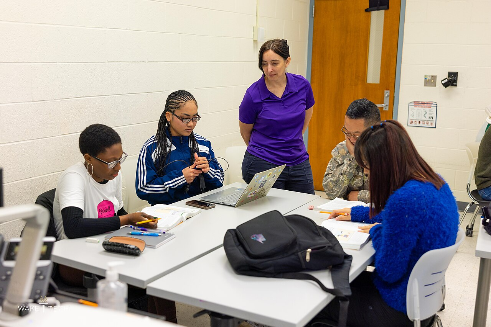

2026-04-14
It starts, usually, with a trip that may never happen, a grandparent's half-remembered phrases, or a colleague whose phone calls in another language sound like music through a wall. An adult decides to learn a second language — not for school, not for a test, just because the world is larger in two languages than in one. The tools have never been cheaper or closer: the classroom is now the kitchen table, the textbook fits in a pocket, and the first lesson is tonight after the dishes.

The folklore says children soak up languages like sponges and adults are stuck translating word by word forever. The folklore is half right and wholly misleading. Children win on accent. Adults win on almost everything else: they can hold a grammar pattern in mind, they know how their own language is built, and they can study for twenty focused minutes instead of drifting through a school year. An adult learner also knows why they are there, which turns out to be the engine of the whole enterprise. The kitchen-table student is not memorizing for a grade. They are collecting the exact words they will need to order coffee, follow a joke, read a menu without pointing, or speak to a grandmother in the language she dreams in.
Fluency is a far shore, but usefulness arrives almost immediately. The first hundred words of any language are a skeleton key: greetings, numbers, food, family, directions, please and thank you and where is the station. With those, a learner can be polite anywhere, and politeness is most of what travel actually requires. Free structured courses — the catalogs at Alison and a dozen apps besides — are built for exactly this stage, ten minutes at a time, streaks and reminders doing the nagging a teacher once did. The trick is not talent. The trick is that the twenty minutes happen on ordinary days: while the kettle boils, on the bus, in the last scroll-shaped slot before sleep.
Somewhere around month three, a door opens that apps cannot open for you: real text. Children's books in the target language are the honest starting shelf — the vocabulary is small, the sentences behave, and finishing a whole book, any book, in another language is a private triumph no certificate improves on. From there the ladder is old and well-built: graded readers, then dual-language editions, then the deep end of the public-domain shelf at Project Gutenberg, where the classics wait in French, Spanish, German, Italian and more, free as air. Reading teaches what drills cannot — the rhythm of the language, its favorite joints and hinges — and it does it silently, at your pace, with a dictionary as the only witness to your mistakes.
Every learner meets the plateau, usually around month four, when the easy words are learned and the hard grammar is still fog. Progress stops announcing itself daily and starts arriving monthly, disguised as ease: a podcast that was noise in spring is merely difficult by autumn; a menu abroad requires no photograph of itself sent to a translating friend. Language teachers have a saying for this stage — the plateau is where the language moves from your notebook into your reflexes, and it cannot be hurried, only inhabited. The learners who cross it share two habits. They keep one pleasure in the language that is not study at all — a football broadcast, a cooking channel, a singer whose lyrics they refuse to look up until the chorus surrenders — and they speak badly, out loud, to patient humans, at every opportunity the world offers: the conversation class, the exchange partner, the waiter in the holiday town who visibly appreciates the attempt more than the accuracy. Vocabulary can be drilled alone. A language, in the end, is learned between people, one rescued sentence at a time.
There is also the matter of the accent, the thing adults apologize for most and should apologize for least. A noticeable accent is not a failed language; it is a language with a biography. It says the speaker crossed a distance to be understood, and listeners in every country on Earth rank the attempt far above the polish. Aim for clear, not invisible. The goal was never to pass for somebody else. It was to arrive, words in hand, as yourself — just in two languages now.
And then one day, months in, a sentence arrives on the radio or in a film and you understand it before you know you have understood it. The subtitle in your head lags a half-second behind the meaning. Language learners describe this moment the way swimmers describe the first unpanicked float: the medium was never the enemy. It was only ever waiting for you to relax into it. The kitchen table is still there. So is the kettle. Book the trip.